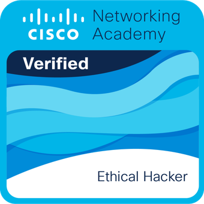

03 — credenciais
Certificações & Insígnias
cat certificados.log — registros validados de conquistas e trilhas concluídas.
Google Cybersecurity Professional Certificate
Google — Coursera

Maratona de Hacking Ético
Cisco Networking Academy

Introduction to Cybersecurity & Networks
Cisco Networking Academy